Apothecary
H

 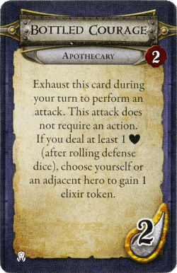
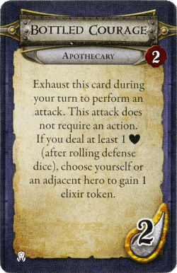


Bard
H


 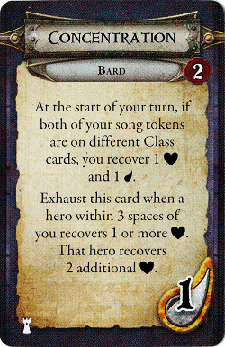
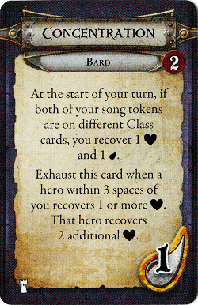


Disciple
H


Prophet
H


Spiritspeaker
H


 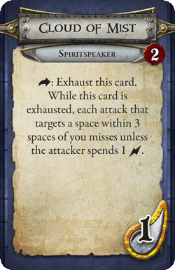
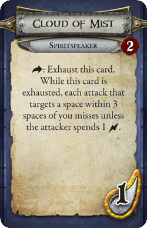
 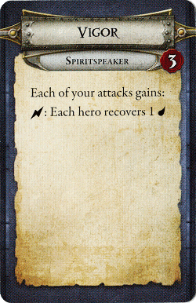
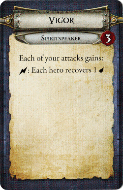

Watchman
H


Battlemage
M


Conjurer
M


 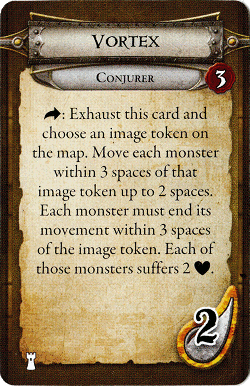
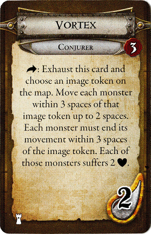Geomancer
M
 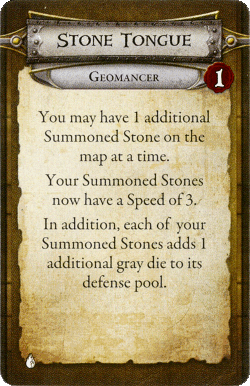
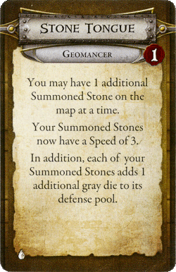 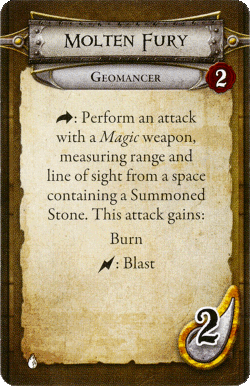
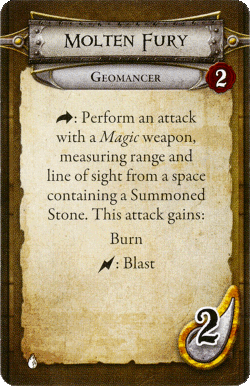

Hexer
M


 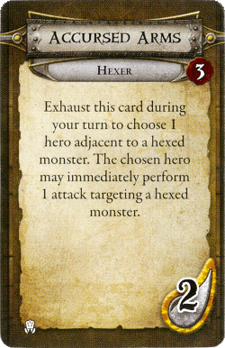
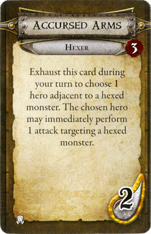
Necromancer
M

 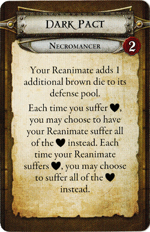
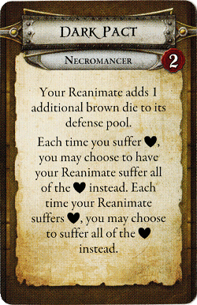

 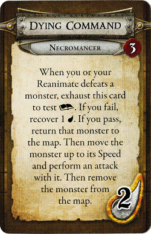
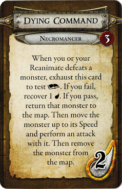Runemaster
M

 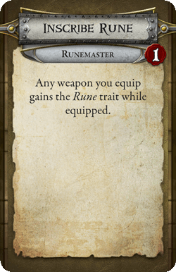
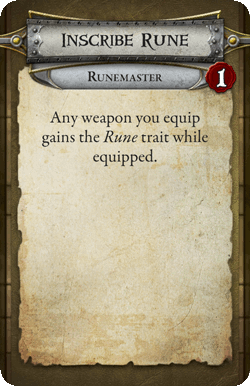
 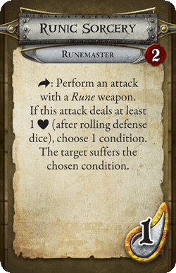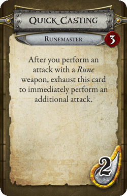
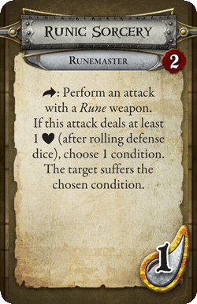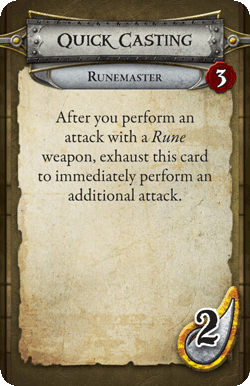
Beastmaster
W


Berserker
W


 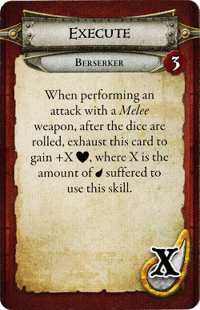
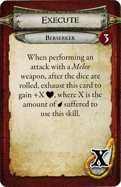Champion
W


 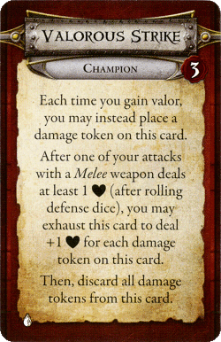
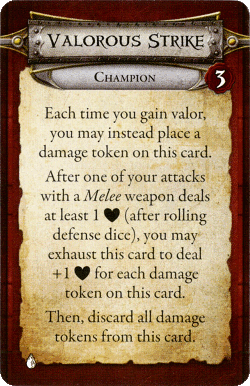Knight
W 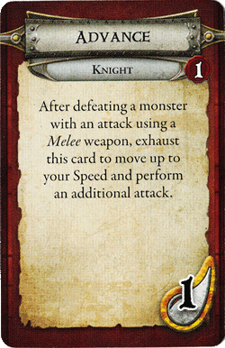
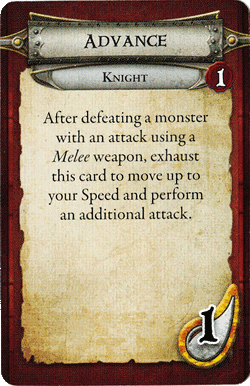
 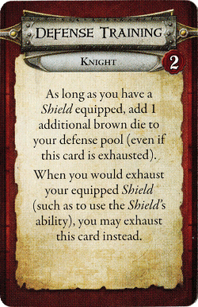
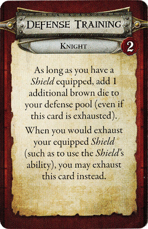
 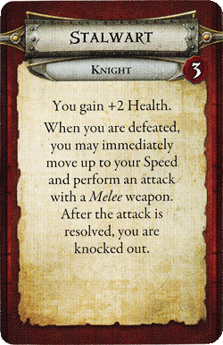
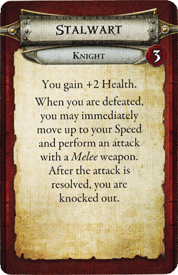
Marshal
W


Skirmisher
W

 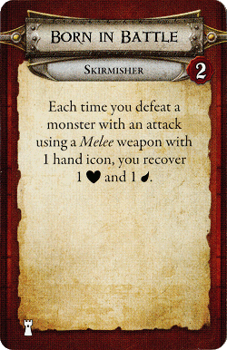
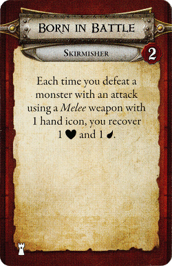


Steelcaster
W


Bounty Hunter
S


 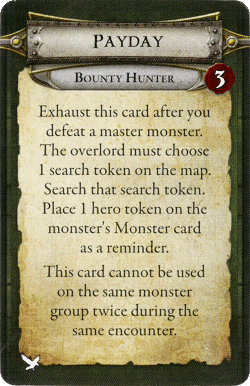
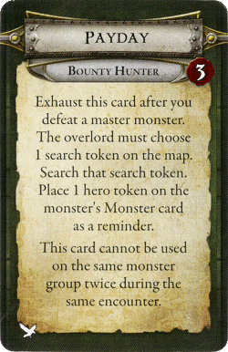

Monk
S


Shadow Walker
S 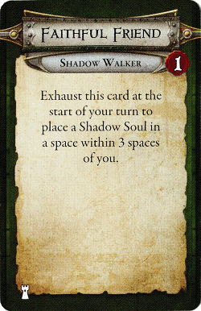
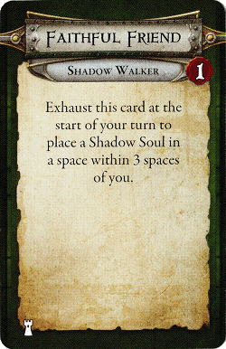


Stalker
S 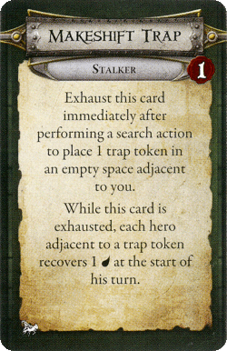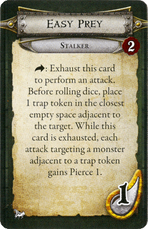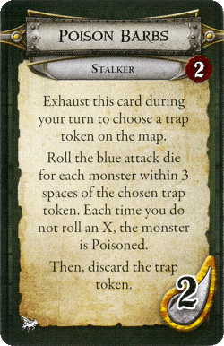
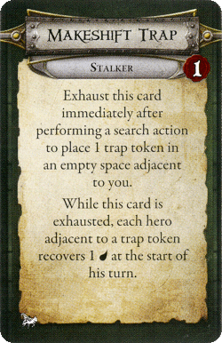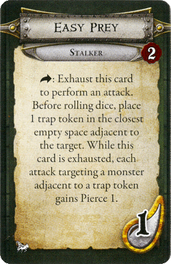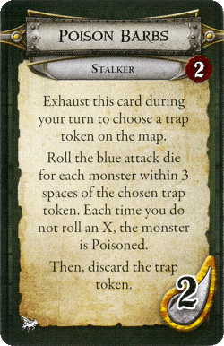Thief
S
 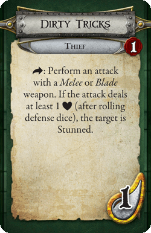
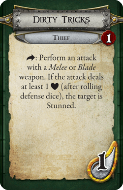
 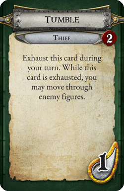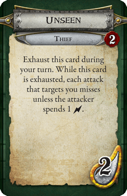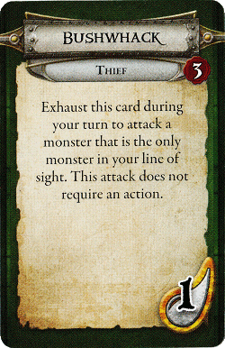
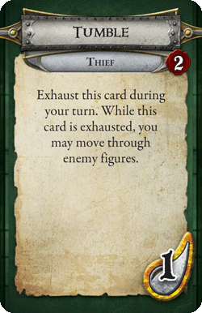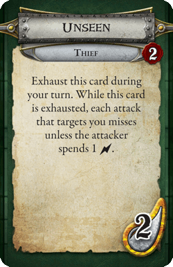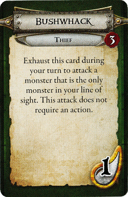
Treasure Hunter
S

 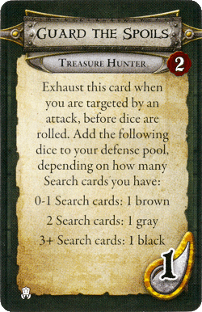
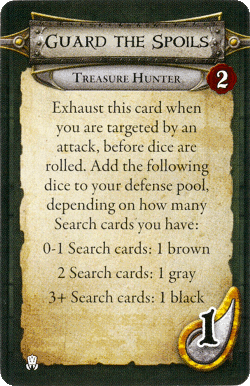

Wildlander
S


Donations Address

3Q6y5d5c43Lj9maDr8dcZyXUFqxPcbBiEv
3Q6y5d5c43Lj9maDr8dcZyXUFqxPcbBiEv